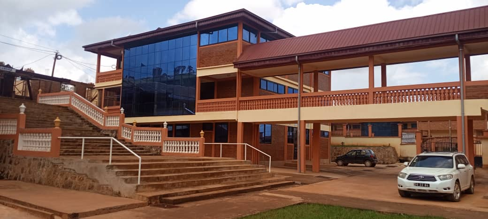
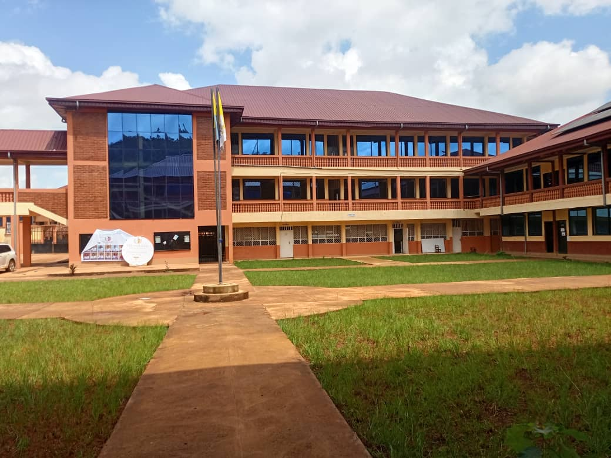

Popular Destinations

Entrance

Campus

Administration

Easily locate lecture halls, departments, hostels, laboratories, cafeterias and every important place inside CATUC Bamenda.
Explore every building on campus.
Quickly discover the fastest route.
Locate lecture halls instantly.
Perfect for new students and visitors.
Buildings
Departments
Students
Campus Coverage

